Este guia apresenta orientações de boas práticas do uso da identidade visual da marca Sua Saúde em todas as suas manifestações gráficas, suas aplicações e formas de uso.
A marca Sua Saúde resgata a idéia de que o usuário busca pela saúde e a saúde é representada pela unidade de saúde. A marca aqui exposta não deve ser alterada de forma indevida, sua modificação apenas é autorizada se utilizando das regras estabelecidas por este manual.
É preferível o uso da marca acompanhado da tipografia. Seu uso apenas com o ícone ou sua versão reduzida só deve ser usada quando não for possível o uso em sua forma original.
A zona de proteção da marca deve ter a mesma largura correspondente ao símbolo de adição que representa a saúde. Nada deve existir dentro dessa zona de proteção.
Para uma melhor legibilidade a marca nao pode ser diminuida a ponto de não ser comppreendida, portanto foi determinado um tamanho mínimo possível para impressão e para aplicações digitais.
Por existir dois lados dentro do sistema (Usuário-Clínica), buscamos representá-los também em cores em todo o projeto, a cor de tom mais escuro refere-se à clínica, e a cor mais clara representa o usuário. Para melhor legibilidade e também para uma passar mais seriedade, a marca sempre é posta na cor branca.
O gradiente foi formado a partir da passagem das cores da paleta, sendo assim formado por quatro cores. Este é utilizado em toda composição da marca e nos demais elementos da identidade visual. O gradiente é utilizado na marca e nos demais elementos na direção transversal da direita para a esquerda em sentido sul.
A tipografia usada é a Montserrat, Bold para Títulos Regular para textos;
É proibido achatar a marca, modificar, utilizar outra fonte ou cor que não foi estabelecida neste manual.
O gradiente sempre é posto na aplicação, com opacidade se adaptando a foto; Quando se trata do usuário, este é sempre posto no lado esquerdo da aplicação e a marca sempre é posta no lado direito; A unidade de saúde é sempre posta no lado direito da aplicação quando está junto com o usuário.